本周完成了Gilbert Strang线性代数的正交、投影、正交矩阵的学习，课程中的Lesson14～Lesson17
笔记都是用课程中手记的，这里只做一个简单的记录。
changelog：课程已经接近尾声，看一边的时候，发现映射部分没有写好，重新根据课件进行整理.
课件地址
Orthogonal 正交
两个向量正交的定义
x，y两个向量正交 <==> xTy = 0子空间正交
子空间S与子空间T正交，则S中的任意一个向量与T中的任意向量都正交。
示例：
row space is orthogonal to null space;
column space is orthogonal to null space of A tranpose正交的用途
the best solution Ax=b when there is no solution，which means seperate the nosize from the infomation.
ATAX = ATb
Projection投影
向量投影
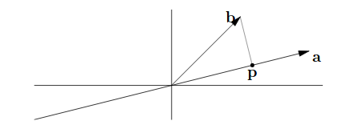e = b - p = b - xa; 这里只有x是常数
而e垂直与a：
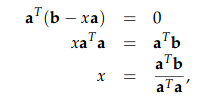
b在a上投影p为：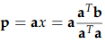
对于任意a，投影公式为：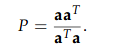投影P的性质： PT = P, P2 = P
投影的意义
对于 Ax = b，若b不在A的column space上，本是无解的，但可以找一个b在A上的投影p，来代替b，求得一个最合适的解。矩阵投影
对于矩阵A，其投影为：
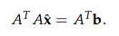；此式的得出是Ax = b 与 Ax’=p 带入正交得出来的。
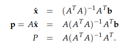其同样满足向量投影的性质
最小二乘法
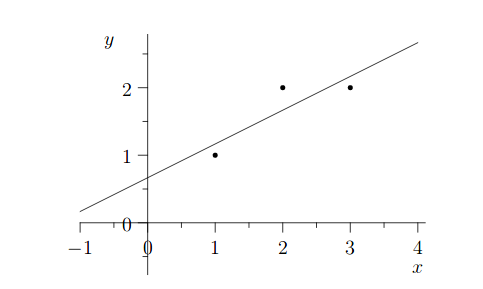
三个点为(1,1)，(2,2)，(3,2)
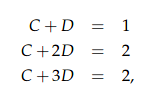
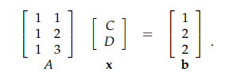
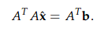
这一部分已经充分说明了一个基本认知：矩阵就是向量。主要研究的是投影矩阵，因为任何向量与它想乘都会映射到相应的空间中。这里对最小二乘法的矩阵解释也很令人印象深刻。
Orthonomal Matrix 正交矩阵
正交矩阵就是一个向量空间两两垂直的向量组成的一组基。
它的好处是简化了投影运算效率
正交矩阵的定义
对于一组正交向量：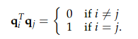
由此对于矩阵Q：QTQ = I正交矩阵的的一个好处
若矩阵A是正交矩阵，求其投影矩阵就会简单：
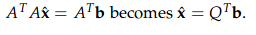正交化的方法：Gramh-schmit方法
整个思路是，以矩阵的一条向量x1为起点，先归一化得到q1，第二个向量是x2，减去在x1方向的分量，然后归一化得q2，第三个向量x3，减去在x1方向、x2方向的分量，然后归一化得q3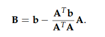
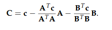